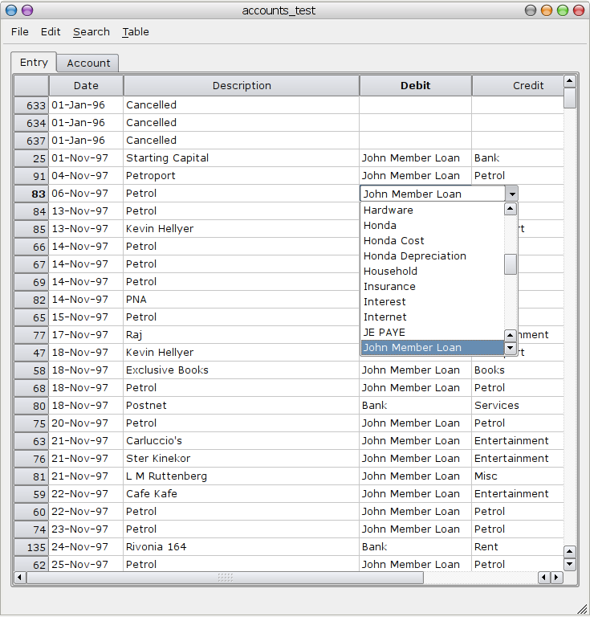

Clevic
Screenshot of a fully defined UI with the foreign-key dropdown in place. Tabs contain the two tables, model definition file is below the screenshot. The Entry model has some code to do update the credit and debit fields when the new item description is found in the table.

Code for minimal UI definition
require 'clevic.rb'
# see sql/accounts.sql for schema
# db connection
Clevic::DbOptions.connect do
database 'accounts_test'
adapter :postgresql
username 'accounts'
end
# minimal definition to get combo boxes to show up
class Entry < Clevic::Record
belongs_to :debit, :class_name => 'Account', :foreign_key => 'debit_id'
belongs_to :credit, :class_name => 'Account', :foreign_key => 'credit_id'
end
# minimal definition to get sensible values in combo boxes
class Account < Clevic::Record
def to_s; name; end
end
Code for a full definition
require 'clevic.rb'
# db connection
Clevic::DbOptions.connect( $options ) do
# use a different db for testing, so real data doesn't get broken.
if options[:database].nil? || options[:database].empty?
database( debug? ? :accounts_test : :accounts )
else
database options[:database]
end
adapter :postgresql
username 'accounts'
end
class Entry < Clevic::Record
belongs_to :debit, :class_name => 'Account', :foreign_key => 'debit_id'
belongs_to :credit, :class_name => 'Account', :foreign_key => 'credit_id'
define_ui do
plain :date, :sample => '88-WWW-99'
distinct :description, :conditions => "now() - date <= '1 year'", :sample => 'm' * 26
relational :debit, :display => 'name', :conditions => 'active = true', :order => 'lower(name)', :sample => 'Leilani Member Loan'
relational :credit, :display => 'name', :conditions => 'active = true', :order => 'lower(name)', :sample => 'Leilani Member Loan'
plain :amount, :sample => 999999.99
distinct :category
plain :cheque_number
plain :active, :sample => 'WW'
plain :vat, :label => 'VAT', :sample => 'WW', :tooltip => 'Does this include VAT?'
records :order => 'date, id'
end
# called when data is changed in the UI
def self.data_changed( top_left, bottom_right, view )
if top_left == bottom_right
update_credit_debit( top_left, view )
else
puts "top_left: #{top_left.inspect}"
puts "bottom_right: #{bottom_right.inspect}"
puts "can't do data_changed for a range"
end
end
# check that the current field is :descriptions, then
# copy the values for the credit and debit fields
# from the previous similar entry
def self.update_credit_debit( current_index, view )
return unless current_index.valid?
current_field = current_index.attribute
if current_field == :description
# most recent entry, ordered in reverse
similar = self.find(
:first,
:conditions => ["#{current_field} = ?", current_index.attribute_value],
:order => 'date desc'
)
if similar != nil
# set the values
current_index.entity.debit = similar.debit
current_index.entity.credit = similar.credit
current_index.entity.category = similar.category
# emit signal to update view from top_left to bottom_right
top_left_index = current_index.choppy( :column => 0 )
bottom_right_index = current_index.choppy( :column => view.model.column_count - 1 )
view.dataChanged( top_left_index, bottom_right_index )
# move edit cursor to amount field
view.selection_model.clear
view.override_next_index( current_index.choppy( :column => view.field_column( :amount ) ) )
end
end
end
end
class Account < Clevic::Record
has_many :debits, :class_name => 'Entry', :foreign_key => 'debit_id'
has_many :credits, :class_name => 'Entry', :foreign_key => 'credit_id'
# define how fields are displayed
define_ui do
plain :name
restricted :vat, :label => 'VAT', :set => %w{ yes no all }
plain :account_type
plain :pastel_number, :alignment => Qt::AlignRight, :label => 'Pastel'
plain :fringe, :format => "%.1f"
plain :active
records :order => 'name,account_type'
end
end